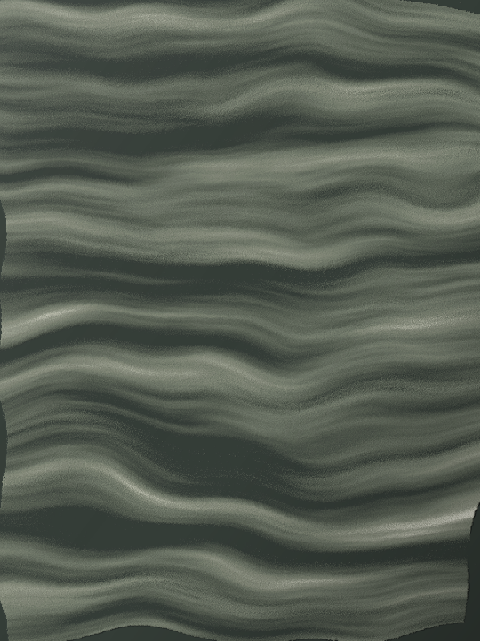
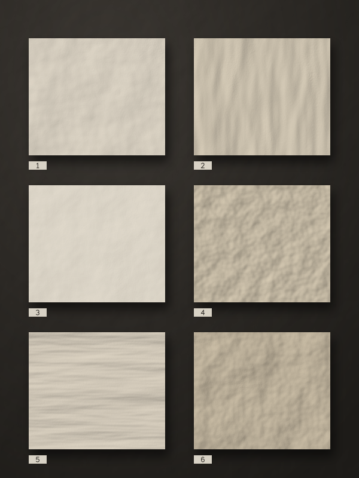
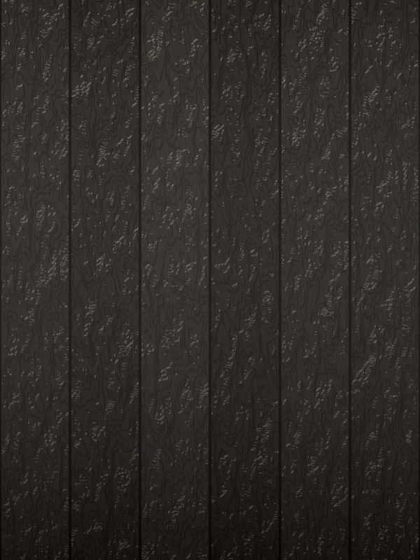
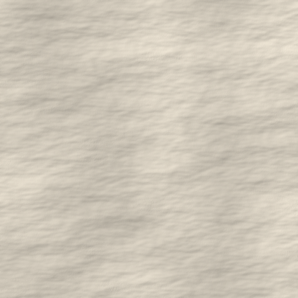
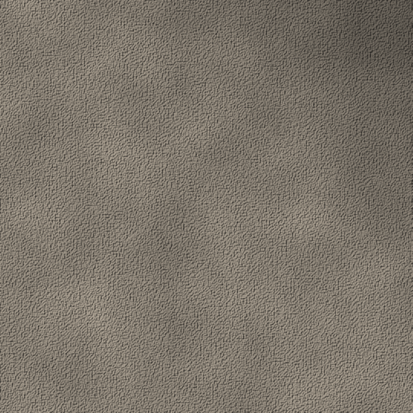

Splitting Andeer gneiss along its cleavage
A morning at the quarry with the masons who cut the walls for Vals, and why the stone is laid the way it was formed.
Notes from the quarry, the workshop and the site: how our materials are found, tested and put together.

A morning at the quarry with the masons who cut the walls for Vals, and why the stone is laid the way it was formed.

Which panels cracked, which ones healed, and the one we specified for the Lavaux house.

Four hundred boards, one fire pit and a lesson from Kyoto about how deep the char should go.


No more than four letters a year. Unsubscribe at any time.